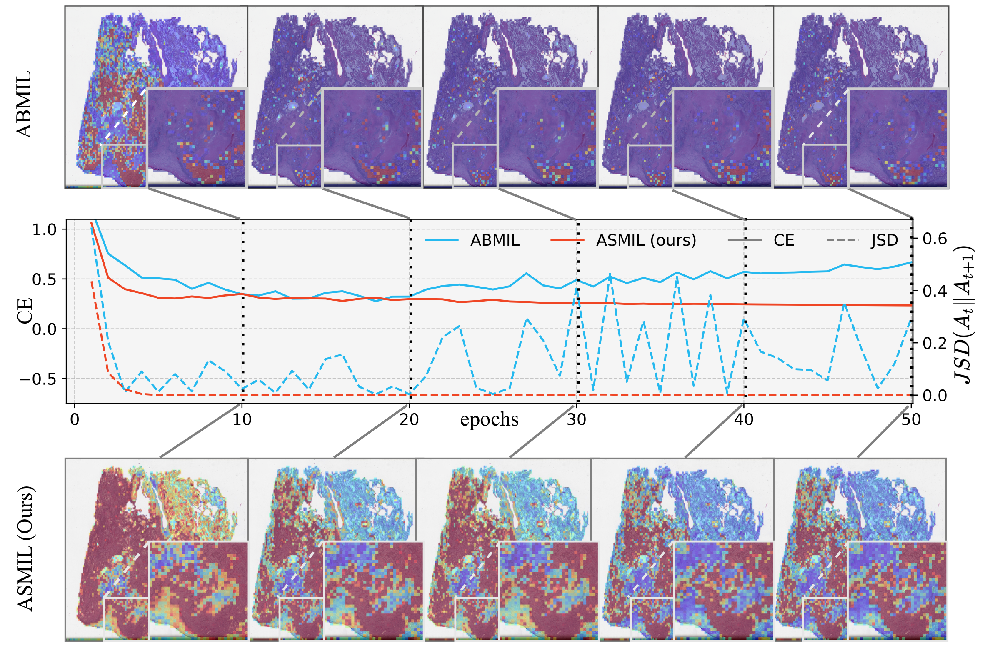

+6.49%
F1 gain over previous state-of-the-art methods in reported settings.
ICLR 2026
Attention-based multiple instance learning (MIL) is widely used for whole-slide image diagnosis, but attention maps may oscillate across epochs instead of converging to a stable pattern. ASMIL addresses this instability together with two other known limitations: overfitting and overly concentrated attention distributions. The framework stabilizes training with an anchor model, uses normalized sigmoid in the anchor branch to avoid concentration collapse, and applies token random dropping for regularization. Experiments across representative MIL baselines and public WSI datasets show strong improvements, including up to 6.49% F1 over prior methods.
F1 gain over previous state-of-the-art methods in reported settings.
Best F1 gain when integrating ASMIL components into existing MIL pipelines.
One method jointly handles instability, overfitting, and attention concentration.

@inproceedings{ye2026asmil,
title={ASMIL: Attention-Stabilized Multiple Instance Learning for Whole-Slide Imaging},
author={Ye, Linfeng and Hamidi, Shayan Mohajer and Chi, Zhixiang and Li, Guang and Pilanci, Mert and Ogawa, Takahiro and Haseyama, Miki and Plataniotis, Konstantinos N.},
booktitle={International Conference on Learning Representations (ICLR)},
year={2026}
}